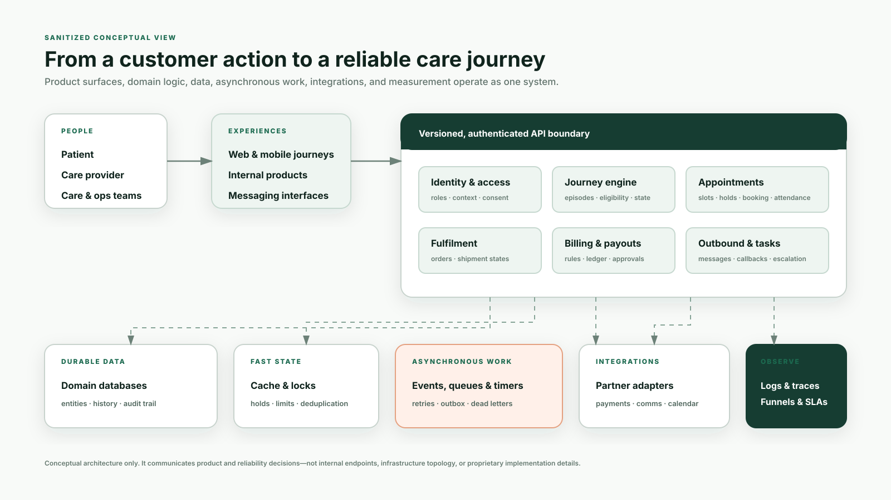
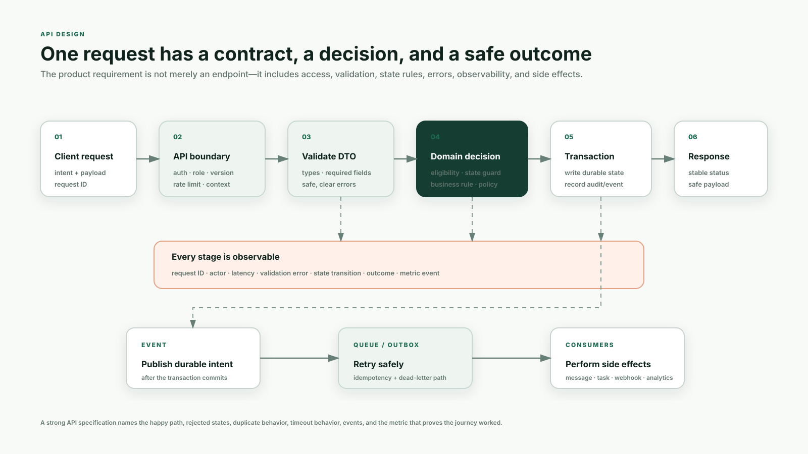
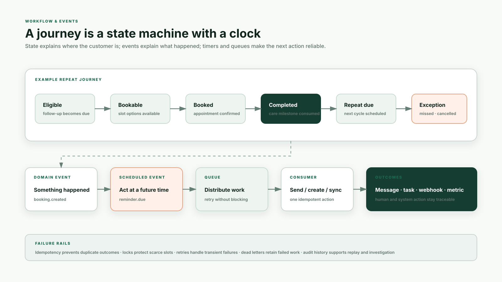
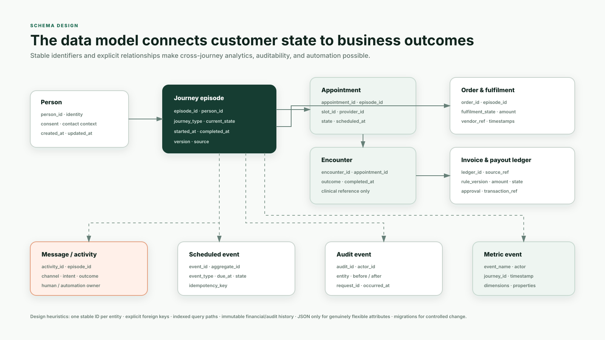

State is memory
It answers: where is this patient, appointment, order, task, or payout right now?
Architecture, APIs, state machines, events, schemas, reliability, and observability—explained in plain language through the product journeys you worked on.
A digital healthcare product is not only a set of screens. It is a group of systems that remember where a patient is, decide what is allowed, coordinate work, recover from failure, and measure whether care and the business moved forward.
It answers: where is this patient, appointment, order, task, or payout right now?
They answer: what happened, when did it happen, and what should react to it?
They define how one product or system may ask another system to do something.
The interface is the menu. The API is the waiter taking a structured order. The domain service is the kitchen deciding whether it can be made. The database is the order book. The queue is the ticket rail. Events tell other stations what happened. Logs and dashboards are the manager’s view of delays, errors, waste, and completed orders.
The reviewed codebase is a modular TypeScript backend. It keeps major healthcare and business domains separate inside one deployable product, while using asynchronous infrastructure for work that should not block a user-facing request.
| Layer | Technology / pattern | What it means in simple language |
|---|---|---|
| Application | NestJS + TypeScript; modular monolith | One main backend codebase split into domain modules with explicit responsibilities. |
| Runtimes | HTTP API, scheduled jobs, batch jobs | User requests, recurring work, and heavy offline work run through different entry points. |
| Durable data | MySQL + TypeORM + migrations | Business entities are stored relationally; migrations change structure in a controlled way. |
| Fast state | Redis / Valkey | Used for caching, rate limits, short-lived holds, locks, and deduplication. |
| Async work | RabbitMQ, queues, Redis Streams | Background consumers handle messages, tasks, webhooks, and other work independently. |
| Cloud | AWS storage, compute, queues, analytics | Managed infrastructure runs services, stores files, schedules batch work, and supports analysis. |
| AI | LLM orchestration, traces, vector search | Models can classify or answer with context, while traces support quality review. |
| Observability | Datadog + tracing + product analytics | Engineers and product teams can connect system behavior to journey and business outcomes. |
It keeps deployment and transactions simpler than dozens of independent microservices, while still forcing clear module boundaries. A team can later extract a high-scale or independently owned module if the cost is justified. “Monolith” does not automatically mean “messy.”
A patient may see one button, but the outcome can touch identity, journey state, scheduling, billing, messaging, tasks, analytics, and an external partner. The diagram shows responsibilities, not exact internal topology.

Which system owns the truth at each step, and what must every channel see consistently?
Where should logic execute, how is data persisted, and how do we isolate and recover from failures?
A complete API design defines the actor, input, validation, allowed state, business decision, durable write, response, errors, duplicate behavior, side effects, and instrumentation.

Request: patient, slot, journey context, source, idempotency key. Decision: patient is eligible and slot remains available. Response: confirmed booking reference and current state. Side effects: reminder timer, provider calendar, confirmation message, operations visibility, and analytics event.
“Create a booking API and send WhatsApp.”
Defines duplicate calls, slot races, rejected states, timeout behavior, committed truth, retry ownership, and the funnel event.
A state machine names valid stages and transitions. A domain event records a meaningful fact. A scheduled event makes future work durable. A queue lets consumers perform side effects without blocking the customer.

| Concept | Question it answers | Example |
|---|---|---|
| State | Where is this entity now? | Appointment is booked; fulfilment is dispatched. |
| Transition | Is this change allowed? | Booked → completed is allowed after the consultation; cancelled → completed may be blocked. |
| Domain event | What important fact just occurred? | appointment.completed; invoice.confirmed. |
| Scheduled event | What must happen later? | Send reminder tomorrow; make repeat journey eligible after a window. |
| Consumer | Who reacts to the fact? | Messaging, task creation, payout ledger, analytics, or a partner webhook. |
Tables and relationships should make customer state, operating work, financial outcomes, and history easy to trace. A clean schema prevents every dashboard or feature from inventing its own definition of truth.

A thing with its own identity: person, appointment, order, payout ledger item.
A stable link: an appointment belongs to a journey episode; a payout references its source.
A structure that makes common lookups fast, such as active tasks by owner or appointments by patient.
Use explicit columns and relationships for concepts that drive product logic, money, permissions, or reporting. Use JSON for genuinely flexible metadata—not to avoid deciding what the core product entities mean.
Distributed systems repeat requests, lose connections, deliver messages late, and fail after one side effect but before another. Reliability patterns make the intended business outcome happen once—or make the exception visible.
Repeating the same request produces the same business outcome. Essential for bookings, ledger entries, payments, tasks, and outbound messages.
Temporarily prevents two actors from claiming the same scarce resource, such as an exact appointment slot.
Stores a future event durably with the transaction so scheduled work is not lost if the process restarts.
Transient failures are attempted again after increasing delays so a partner outage does not block the main request.
Work that exhausted retries is retained for investigation or replay instead of disappearing silently.
Records actor, request, previous state, next state, and time so teams can explain what happened.
The episode tracks the patient’s current repeat stage and prevents channels from disagreeing about the next best action.
Messages, tasks, callbacks, fulfilment, and exceptions are tied to the same episode and can be measured by city, owner, and cohort.
Repeat revenue contribution and realized LTV are lagging outcomes. The system exposes leading states: eligible, reached, self-booked, booked, attended, fulfilled, and repurchased—each with an owner and failure reason.
Flow: inbound message → conversation history → intent/classification → response or escalation → task/callback → outcome event.
Controls: rate limits, URL/input sanitization, human review, escalation thresholds, traces, quality sampling, and conversation-level attributes.
Flow: journey event → objective and priority rules → existing-task lookup → expire/merge/create → carry forward context.
Controls: stable patient/objective keys, latest relevant context, explicit expiry, owner visibility, and workload metrics.
Flow: contract + rule version → source business event → calculation → ledger entry → approval → statement/payslip → payment initiation.
Controls: unique source reference, slab and validity rules, append-safe adjustments, role-based approval, audit trail, and reconciliation.
Flow: pending → address confirmed → packed → dispatched → out for delivery → delivered, return, or cancellation.
Controls: valid state transitions, partner reference, webhook deduplication, exception visibility, and event-driven customer communication.
Identify the entity → define its states → specify allowed commands → commit durable truth → publish events → execute side effects idempotently → trace every outcome → measure the customer and business result.
The same mechanics power loan applications, mandates, repayments, settlements, partner commissions, trade orders, portfolio rebalancing, and collections: explicit states, auditable money movements, idempotent commands, asynchronous side effects, and strong observability.
Observability connects technical evidence to journey evidence. Datadog or tracing can explain latency and errors; product analytics explains whether users progressed; business metrics explain whether the operating model worked.
Latency, error rate, queue age, retry count, duplicate rate, lock contention.
Eligibility, conversion, drop-off reason, completion, turnaround time, exception rate.
Repeat revenue, LTV, payout cost/revenue, workload, margin, service quality.
A timestamped record from one component: “validation failed” or “consumer retry 2.” Useful, but fragmented.
Follows one request or event across components using a shared request/trace ID, revealing where time or failure occurred.
A count, rate, duration, or gauge observed over time: errors/minute, queue age, completion rate, or weekly tasks.
A rule that calls attention to a meaningful threshold. Good alerts are actionable and tied to an owner and runbook.
Your credible technical story is strong: you owned customer and business journeys, translated them into system requirements, collaborated on API and event behavior, used technical evidence to diagnose failures, and drove rollout and metrics. Engineering owned implementation details.
| Area | Your defensible ownership | Avoid saying |
|---|---|---|
| Architecture | Mapped journeys and responsibility boundaries; challenged handoffs, state, failure paths, and observability with engineering. | “I architected the complete Allo backend.” |
| APIs | Defined actors, payload requirements, success/error behavior, duplicate handling, downstream events, and partner needs. | “I implemented all production APIs.” |
| Schema | Defined product entities, relationships, states, reporting needs, auditability, and edge cases with engineering. | “I designed every database schema and migration.” |
| Reliability | Prioritized failure modes, manual fallback, alerts, feature flags, business guardrails, and safe operating behavior. | “I built RabbitMQ, Redis, and deployment infrastructure.” |
| Observability | Connected traces/logs/failure classification to funnel and business metrics; used Datadog, Langfuse, SQL, and dashboards. | “I owned all platform SRE.” |
“I did not code the full backend. I owned the product journey and worked closely with engineering to make the technical contract explicit: states, actors, API behavior, events, schema needs, failure handling, observability, rollout, and the metric that proved the system worked.”
Partnered with engineering on API contracts, webhook/event flows, state-machine edge cases, entity relationships, observability, and failure recovery across booking, chatbot, task, payout, and fulfilment systems.
Baseline, user pain, operating constraint, and why it mattered.
Entities, states, actors, API/event behavior, and failure paths.
Trade-offs, ownership, collaboration, rollout, and manual fallback.
System, journey, and business metrics; what changed afterward.
Never stop at the happy-path screen. Always add: current state, source of truth, duplicate call, timeout, partial failure, customer message, operator visibility, audit trail, rollout guardrail, and success metric.
Reader prepared for Naman Jain from a high-level codebase review and the production work described in his resume and portfolio. It intentionally omits sensitive implementation details and should not be treated as official company architecture documentation.